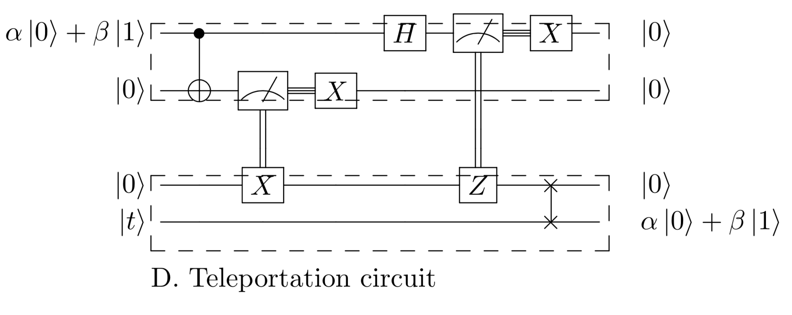

Quantum Teleportation¶
Quantum teleportation, or “spooky action at a distance” as denoted by Einstein, is a method to deliver any arbitrary quantum state, \(|\psi\rangle\), between agents only using classical communication channels and a shared bell state pair.
This protocol enables quantum computers to interact as a network in sharing arbitrary quantum states. Note that due to the requirement of classical communication, this protocol does not validate faster-than-light communication. Quantum teleporatation transports a quantum state by sending two classical bits, and thus is the inverse of superdense coding.
Protocol¶
Quantum teleportation involves three agents, Alice, Bob, and Charlie. Charlie prepares the bell state pair and distributes the entangled qubits to Alice and Bob. Alice entangles her qubit \(|\psi\rangle\) with her bell state pair from Charlie, and then measures her qubits. Finally, based on these measurements, Bob can recreate Alice’s qubit \(|\psi\rangle\) by using \(\textbf{X}\) and \(\textbf{Z}\) gates.
Circuit¶
Steps¶
1. Charlie creates a bell state pair using a Hadamard (\(\textbf{H}\)) and Controlled-Not (\(\textbf{CNOT}\)) gate, \(|AB\rangle = \frac{1}{\sqrt{2}}(|00\rangle + |11\rangle) \) to Alice and qubit \(B\) to Bob.
2. Alice projects her arbitrary quantum state \(|\psi\rangle = \alpha |0\rangle + \beta |1\rangle\) onto qubit \(A\) using a Controlled-Not (\(\textbf{CNOT}\)) and a Hadamard (\(\textbf{H}\)) gate. The 3-qubit quantum system, \(|\psi A B\rangle\), is in state: \(\frac{1}{2}[|00\rangle (\alpha |0\rangle + \beta |1\rangle) + |01\rangle (\alpha |1\rangle + \beta |0\rangle)\) \(+ |10\rangle (\alpha |0\rangle - \beta |1\rangle) + |11\rangle (\alpha |1\rangle - \beta |0\rangle)]\)
3. Alice measures \(|\psi\rangle\) and \(A\) and classically sends the results to Bob. As a result of the measurements Bob’s state collapses to one of the four Bell States.
4. Bob recreate’s \(|\psi\rangle\) based on Alice’s measurements, namely applying a Pauli-X (\(\textbf{X}\)) gate if \(A\) is measured to be \(|1\rangle\) and applying a Pauli-Z (\(\textbf{Z}\)) gate if \(\psi\) is measured to be \(|1\rangle\). Bob’s qubit \(B\) is now in state \(|\psi\rangle = \alpha |0\rangle + \beta |1\rangle\).
Tutorial¶
We will now implement quantum teleportation using netQuil’s framework of ref:Agents <agent> and ref:Connections <connections> to simulate the teleportation of a quantum state using a quantum network. The ref:Devices <devices> module and ref’Noise <noise>’ allows you to include realistic devices with noise in your quantum network.
Import Dependencies¶
from netQuil import *
from pyquil import Program
from pyquil.api import QVMConnection
from pyquil.gates import *
Setup Agents¶
Let us first define agent Charlie who creates and distributes the bell state pair to Alice and Bob. We can extend the Agent classes and redefine our \(\textit{run()}\) methods. To create our bell state pair, he can use a Hadamard (\(\textbf{H}\)) and Controlled-Not (\(\textbf{CNOT}\)) gate from pyquil. Then, using netQuil, we want to send each qubit to Alice and Bob.
class Charlie(Agent):
'''
Charlie sends Bell pairs to Alice and Bob
'''
def run(self):
# Create bell state pair
p = self.program
p += H(0)
p += CNOT(0,1)
self.qsend(alice.name, [0])
self.qsend(bob.name, [1])
Now, we will create agent Alice and agent Bob. Alice will project her state \(|\psi\rangle = \alpha |0\rangle + \beta |1\rangle\) onto her bell state pair. Then, she will measure her two qubits, and send the results to Bob. Bob will use the results to recreate Alice’s original state \(|\psi\rangle = \alpha |0\rangle + \beta |1\rangle\) with his bell state pair.
class Alice(Agent):
'''
Alice projects her state on her bell state pair from Charlie
'''
def run(self):
p = self.program
# Define Alice's Qubits
phi = self.qubits[0]
qubitsCharlie = self.qrecv(charlie.name)
a = qubitsCharlie[0]
# Entangle Ancilla and Phi
p += CNOT(phi, a)
p += H(phi)
# Measure Ancilla and Phi
p += MEASURE(a, ro[0])
p += MEASURE(phi, ro[1])
class Bob(Agent):
'''
Bob recreates Alice's state based on her measurements
'''
def run(self):
p = self.program
# Define Bob's qubits
qubitsCharlie = self.qrecv(charlie.name)
b = qubitsCharlie[0]
# Prepare State Based on Measurements
p.if_then(ro[0], X(b))
p.if_then(ro[1], Z(b))
Set Up Program¶
We can now define our pyquil program to pass into each agent. For this demo, we will let qubit 2 be our state \(|\psi\rangle\), prepared using a Hadamard. Therefore, Alice has state \(|\psi\rangle = |2\rangle = \frac{1}{\sqrt{2}}(|0\rangle + |1\rangle)\).
p = Program()
p += H(2)
# Create Classical Memory
ro = p.declare('ro', 'BIT', 3)
Simulate Network¶
Finally, we can define our agents, connect them, and simulate our program. Notice, that initially Charlie has qubits 0 and 1, in order to make the bell state pair, while Alice has qubit 2, representing state \(|\psi\rangle\).
# Create Alice, Bob, and Charlie. Give Alice qubit 2 (phi). Give Charlie qubits [0,1] (bell state pairs).
alice = Alice(p, qubits=[2], name='alice')
bob = Bob(p, name='bob')
charlie = Charlie(p, qubits=[0,1], name='charlie')
# Connect agents to distribute qubits and report results
QConnect(alice, bob, charlie)
CConnect(alice, bob)
# Run simulation
Simulation(alice, bob, charlie).run()
qvm = QVMConnection()
qvm.run(p)
Check Results¶
We can check if our state was teleported without a quantum channel by using pyquil’s WaveFunctionSimulator as follows.
from pyquil.api import WavefunctionSimulator
def printWF(p):
'''
Prints the wavefunction from simulating a program p
'''
wf_sim = WavefunctionSimulator()
waveFunction = wf_sim.wavefunction(p)
print(waveFunction)
printWF(p)
Extend Simulation¶
You have now created a program to simulate quantum teleportation! You can now teleport a quantum state only using a classical channel quantum bit. It is now time to get creative. Add noise, extra agents, or construct a complicated initial state.